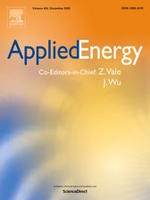
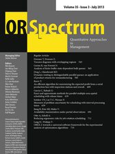
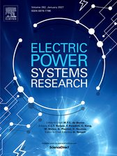
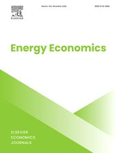

About
01I am a Postdoctoral Researcher in energy economics, electricity market, investment analysis, contracts designs, market competition, and decision-making under uncertainty in technology-based markets. My research interest includes almost everything that may lie in the intersection of Economics, Finance, Operations Research, and Machine Learning.
I build optimization and equilibrium models and pair them with learning algorithms that let market participants adapt under uncertainty. Recent work covers contract and tariff design under emissions policy, storage bidding in fully renewable systems, no-regret learning in forward markets, and the economics of AI-driven platforms for electric mobility.
I joined DTU Management in 2025. From 2023 to 2024 I was a Marie Skłodowska-Curie Postdoctoral Researcher at DTU Wind and Energy Systems, funded by the EuroTechPostdoc2 programme, working on AI-assisted electricity market design for sustainability. My PhD is in Mathematical Methods of Economics, Finance, and Actuarial Sciences, from the University of Brescia in 2021, with an 18-month visit to Universidad Carlos III de Madrid.
Research
02I am interested in problems that lie at the intersection of economics, finance, operations research, and machine learning, and in particular in how market design choices shape investment and operation in power systems with high renewable shares.
Publications
03Journal articles
-
J6
Bidding strategies for energy storage operators in a 100% renewable electricity market: A game-theoretic approach
Abstract
Large-scale energy storage is expected to be a pivotal source of flexibility in electricity systems supplied entirely by renewable energy sources (RES). However, its strategic role in market-based dispatch remains insufficiently understood. In a 100% RES market setting, storage can improve adequacy and renewable utilization by shifting energy across time. It can also acquire market power as the main flexible, price-making technology. In this paper, we develop a Cournot competition model in which storage operators choose quantity bids to maximize profit in a stylized day-ahead electricity market supplied only by RES. Market clearing is represented through residual-demand blocks so that renewable intermittency appears as an intertemporal arbitrage opportunity for storage operators. We formulate the storage operators’ problem in two tractable ways: (ii) a continuous reformulation based on demand blocks, and (ii) an equivalent mixed-integer linear programming (MILP) model with big- M linearization. Nash equilibria are computed with an iterative best-response procedure and benchmarked against a centralized social planner problem to quantify efficiency losses from strategic behavior. The model is calibrated to Denmark’s DK1 bidding zone using 2024 day-ahead data and 2030 renewable-capacity and demand projections. The results show that storage reduces imbalances and improves welfare relative to a no-storage case. Concentrated ownership also creates incentives to withhold flexibility, raise prices, and slow the reduction of unmet demand and curtailment. These findings position storage as both a stabilizing resource and a potential source of market power, highlighting the importance of market designs that jointly consider competition, concentration, and capacity deployment in high-RES systems.
-

J5IoT-enabled interoperability for energy–mobility integration: A systematic review of protocols, platforms, and standardsAbstract
The convergence of the energy and mobility sectors through electric vehicle adoption and smart grid deployment demands seamless interoperability for efficient resource management and sustainability. This systematic literature review examines how Internet of Things (IoT) technologies facilitate integration across these domains. Following Preferred Reporting Items for Systematic Reviews and Meta-Analyses (PRISMA) guidelines, we analyzed 221 peer-reviewed publications from 2015 to 2024. Our review identifies critical challenges spanning technical, semantic, organizational, and regulatory dimensions, and synthesizes IoT-enabled solutions including communication protocols, interoperability platforms, domain-specific standards, and semantic technologies. Analysis of real-world deployments demonstrates tangible benefits: standardized protocols reduce integration costs by 30–50%, edge computing architectures achieve sub-10ms latency for vehicle-to-grid frequency regulation, and semantic interoperability enables cross-domain data fusion. We identify critical research opportunities in privacy-preserving analytics, quantum-safe cryptography, digital twin technologies, and next-generation communications. This work provides researchers, practitioners, and policymakers with a comprehensive reference for advancing IoT-enabled energy-mobility interoperability.
-

J4Dynamic tariff-based demand response in the retail electricity market under uncertaintyAbstract
Demand response programs play a crucial role in improving system reliability and mitigating price volatility by altering the core profile of electricity consumption. This paper proposes a game-theoretical model that captures the dynamic interplay between retailers (leaders) and consumers (followers) in a tariff-based electricity market under uncertainty. The proposed procedure offers theoretical and economic insights by analyzing consumer flexibility within a hierarchical decision-making framework. In particular, two main market configurations are examined under uncertainty: i) there exists a retailer that exercises market power over consumers, and ii) the retailer and the consumers participate in a perfect competitive game. The former is formulated as a mathematical program with equilibrium constraints, whereas the latter is recast as a mixed-integer linear program. These problems are solved by deriving equivalent tractable reformulations based on the Karush-Kuhn-Tucker (KKT) optimality conditions of each agent’s problem. Numerical simulations based on real data from the European Energy Exchange (EEX) are used to illustrate the performance of the proposed methodology. The results indicate that the proposed model effectively characterizes the interactions between retailers and flexible consumers in both perfect and imperfect market structures. Under perfect competition, the economic benefits extend not only to consumers but also to overall social welfare. Conversely, in an imperfect market, retailers leverage consumer flexibility to enhance their expected profits, transferring the risk of uncertainty to end-users. Additionally, the degree of consumer flexibility and consumers’ valuation of electricity consumption play significant roles in shaping market outcomes. These findings highlight the crucial impact of market structure and consumer behavior on the dynamics of electricity market pricing under demand response programs.
-

J3Learning to bid in forward electricity markets using a no-regret algorithmAbstract
It is a common practice in the current literature of electricity markets to use game-theoretic approaches for strategic price bidding. However, they generally rely on the assumption that the strategic bidders have prior knowledge of rival bids, either perfectly or with some uncertainty. This is not necessarily a realistic assumption. This paper takes a different approach by relaxing such an assumption and exploits a no-regret learning algorithm for repeated games. In particular, by using the a posteriori information about rivals’ bids, a learner can implement a no-regret algorithm to optimize her/his decision making. Given this information, we utilize a multiplicative weight-update algorithm, adapting bidding strategies over multiple rounds of an auction to minimize her/his regret. Our numerical results show that when the proposed learning approach is used the social cost and the market-clearing prices can be higher than those corresponding to the classical game-theoretic approaches. The takeaway for market regulators is that electricity markets might be exposed to greater market power of suppliers than what classical analysis shows.
-
J2
Contract design in electricity markets with high penetration of renewables: A two-stage approach
Abstract
The interplay between risk aversion and financial derivatives has received increasing attention since the advent of electricity market liberalization. One important challenge in this context is how to develop economically efficient and cost-effective models to integrate renewable energy sources (RES) in the electricity market, which constitutes a relatively new and exciting field of research. This paper proposes a game-theoretical equilibrium model that characterizes the interactions between oligopolistic generators in a two-stage electricity market under the presence of high RES penetration. Given conventional generators with generation cost uncertainty and renewable generators with intermittent and stochastic capacity, we consider a single futures contract market that is cleared prior to a spot market where the energy delivery takes place. We introduce physical and financial contracts to evaluate their performance assess their impact on the electricity market outcomes and examine how these depend on the level of RES penetration. Since market participants are usually risk-averse, a coherent risk measure is introduced to deal with both risk-neutral and risk-averse generators. We derive analytical relationships between contracts, study the implications of uncertainties, test the performance of the proposed equilibrium model and its main properties through numerical examples. Our results show that overall electricity prices, generation costs, profits, and quantities for conventional generators decrease, whereas quantities and profits for RES generators increase with RES penetration. Hence, both physical and financial contracts efficiently mitigate the impact of uncertainties and help the integration of RES into the electricity system.
-

J1Contracts in electricity markets under EU ETS: A stochastic programming approachAbstract
The European Union Emission Trading Scheme (EU ETS) is a cornerstone of the EU’s strategy to fight climate change and an important device for plummeting greenhouse gas (GHG) emissions in an economically efficient manner. The power industry has switched to an auction-based allocation system at the onset of Phase III of the EU ETS to bring economic efficiency by negating windfall profits that have been resulted from grandfathered allocation of allowances in the previous phases. In this work, we analyze and simulate the interaction of oligopolistic generators in an electricity market with a gametheoretical framework where the electricity and the emissions markets interact in a twostage electricity market. For analytical simplicity, we assume a single futures market where the electricity is committed at the futures price, and the emissions allowance is contracted in advance, prior to a spot market where the energy and allowances delivery takes place. Moreover, a coherent risk measure is applied (Conditional Value at Risk) to model both risk averse and risk neutral generators and a two-stage stochastic optimization setting is introduced to deal with the uncertainty of renewable capacity, demand, generation, and emission costs. The performance of the proposed equilibrium model and its main properties are examined through realistic numerical simulations. Our results show that renewable generators are surging and substituting conventional generators without compromising social welfare. Hence, both renewable deployment and emission allowance auctioning are effectively reducing GHG emissions and promoting low-carbon economic path.
Preprints and under review
-
S5
What the annual energy balance hides: the coordination value of digital platforms for positive energy districts
Abstract
Positive energy districts (PEDs) are usually assessed by annual net energy, whereas distribution networks operate hour by hour. An annually positive district still imports on low-generation hours and exports or curtails on high-generation hours. How large this hourly imbalance is behind an annual balance, and how much of it coordination among prosumers can close without new physical capacity, is not established. This paper models a multi-carrier prosumer community coupling electricity and heat behind a shared grid connection with a net-export hosting limit. The model is solved as a centralized community problem and as a price-taking peer-to-peer (P2P) market. Under convexity, the equilibrium implements the regularized community optimum and the P2P and congestion prices are the duals of the pool-clearing and hosting constraints. The model is calibrated to six European district archetypes with constructed hourly profiles. Hourly self-sufficiency is only 48–50% in the four deeply studied districts and ranges from 48–55% across all six, leaving a no-platform coordination gap of 2.8–5.9% of no-platform economic cost. The shared-forecast step recovers only 6–18% of the gap, while grid-aware pricing reduces curtailment by 45% in the primary district. Coordination mainly reduces surplus-side inefficiency, whereas closing the deficit side requires storage. The results are scenario-based projections for calibrated archetypes, and the operating benefit is small and contingent on binding hosting limits and high feed-in remuneration. For regulators and distribution system operators this supports hourly, bidirectional indicators alongside the annual positive-energy target, and a congestion charge active only in binding hours with a predetermined refund, while the business case for a platform at district scale rests on grid-side value and aggregation across districts.
-
S4
Optimal power expansion planning under uncertainty in sub-Saharan Africa: A stochastic dual dynamic programming approach
Abstract
Universal electricity access and decarbonization are interlinked challenges for sub-Saharan Africa. Generation expansion planning methods used in the region rarely represent sequential and irreversible investment under demand and hydrological uncertainty. This paper develops a multistage stochastic generation expansion model solved with stochastic dual dynamic programming (SDDP) to address the problem. The model represents demand and country-specific Markov hydrological uncertainty, accounts for technology-specific construction lead times, and endogenous reliability. The model is applied to the Ethiopia and Zimbabwe power systems over 2025–2050. The results show that for Ethiopia, the least-cost pathway is hydropower, with wind and solar sources providing increasing diversification. The model reduces cumulative expected unserved energy by about 78 TWh relative to a lower-cost deterministic expected value investment plan. For Zimbabwe, the least-cost pathway expands solar, hydropower, and gas while retaining residual coal as inherited coal capacity retires. Additionally, carbon pricing reduces emissions and increases resource costs by about 3% to 5%, creating a gradual cost-emissions trade-off. Combining a carbon tax policy with concessional solar financing renders the lowest average annual emissions while keeping resource costs below the baseline, which solves the model without emission constraint. At approximately matched expected emissions, emission caps have higher net resource costs than the corresponding carbon tax scenarios. The overall results imply that adaptive investment model can reduce power shortage exposure, while carbon policy design and lower clean investment costs shape the cost of decarbonization in developing power systems.
-
S3
Feature-driven reinforcement learning for intraday photovoltaic trading: Reward design and cross-zone transfer in Nordic electricity markets
Abstract
Sequential intraday electricity trading allows photovoltaic (PV) operators to reduce imbalance settlement costs as forecasts improve throughout the day. Yet deployable trading policies must jointly handle forecast uncertainty, intraday prices, liquidity, and the asymmetric economics of PV imbalance exposure. This paper proposes a feature-driven reinforcement learning (FDRL) framework for intraday PV trading in the Nordic market. Its main methodological contribution is a corrected reward that evaluates performance relative to a no-trade baseline, removing policy-independent noise that can otherwise push reinforcement learning toward inactive policies in high-price regimes. The framework combines this objective with a predominantly linear policy and a closed-form execution surrogate for efficient, interpretable training. In a strict walk-forward evaluation over 2021-2024 across four Nordic bidding zones (DK1, DK2, SE3, SE4), the method delivers statistically significant profit improvements over the spot-only baseline in every zone. Portfolio experiments show that a pooled cross-zone policy can match zone-specific models, while transfer-learning results indicate a two-cluster market structure and effective deployment in new zones with limited local data. The proposed framework offers an interpretable and computationally practical way to reduce imbalance costs, while the transfer results provide guidance for scaling strategies across bidding zones with different market designs.
-
S2
Cost-benefit analysis of an AI-driven operational digital platform for integrated electric mobility, renewable energy, and grid management
Abstract
Integrating electric mobility, including electric vehicles (EVs), electric trucks (ETs), and renewable energy sources (RES) with the power grid is paramount for decarbonization, efficiency, and stability. A critical gap remains, however: existing smart-grid and e-mobility cost-benefit analysis (CBA) approaches do not yet provide a unified framework for appraising AI-driven operational digital platforms (ODPs) that jointly coordinate EV/ET charging, renewable generation, and grid operations across sectoral and national boundaries. This paper develops a seven-step CBA framework tailored to this class of platform. The framework maps each layer of a multi-layered AI architecture to traceable, monetizable benefit streams-panning economic efficiency, grid reliability, and environmental externalities--while explicitly accounting for AI-specific capital and operational expenditures that conventional appraisals omit. Applied to a ten-year, three-country deployment across Austria, Hungary, and Slovenia, the analysis indicates a robust positive investment case under the modeled assumptions, confirmed through scenario sensitivity analysis, one-way parameter ranking, and probabilistic simulation. Benefit composition and country-level drivers differ systematically across national contexts, yet the economic rationale is preserved in each, reflecting the framework's adaptability to heterogeneous electrification trajectories. The findings indicate the economic viability of AI-driven digital platforms for cross-sectoral energy--mobility integration and highlight the critical role of ODPs in advancing decarbonization in the mobility--power nexus. To that end, they have direct implications for the design and appraisal of digital infrastructure investments under the EU's Fit for 55 and REPowerEU programmes.
-
S1
Solar PV installation potential assessment on building facades based on vision and language foundation models
Abstract
Building facades represent a significant untapped resource for solar energy generation in dense urban environments, yet assessing their photovoltaic (PV) potential remains challenging due to complex geometries and semantic components. This study introduces SF-SPA (Semantic Facade Solar-PV Assessment), an automated framework that transforms street-view photographs into quantitative PV deployment assessments. The approach combines computer vision and artificial intelligence techniques to address three key challenges: perspective distortion correction, semantic understanding of facade elements, and spatial reasoning for PV layout optimization. Our four-stage pipeline processes images through geometric rectification, zero-shot semantic segmentation, Large Language Model (LLM) guided spatial reasoning, and energy simulation. Validation across 80 buildings in four countries demonstrates robust performance with mean area estimation errors of 6.2% ± 2.8% compared to expert annotations. The automated assessment requires approximately 100 seconds per building, a substantial gain in efficiency over manual methods. Simulated energy yield predictions confirm the method's reliability and applicability for regional potential studies, urban energy planning, and building-integrated photovoltaic (BIPV) deployment. Code is available at: https://github.com/CodeAXu/Solar-PV-Installation
Teaching
04Completed the DTU university pedagogical programme, with the capstone project defended in September 2026 and the teaching portfolio in November 2026.
-
42010
Introduction to Business Studies BScIntroduction to statistics, covering parameters, sampling and distributions, hypothesis testing, confidence intervals, and levels of significance. 150+ students.DTU Management, Fall 2026
-
42010
Introduction to Business Studies BScInvestment analysis, covering cost-benefit analysis, investment under uncertainty, Monte Carlo simulation, WACC, and expected NPV, for 85+ students, and digital marketing for 30+ students, taught with group projects and flipped-classroom elements.DTU Management, Fall 2025
-
42015
Energy Economics MScCo-taught congestion management, power markets, and balancing markets for 250+ students, with real market data, and bidding and congestion simulation games.DTU Management, Fall 2025
-
42009
Introductory Economics BScMicroeconomics, including oligopoly and game theory, and macroeconomics, for 200+ students, taught with in-class experiments and polling tools.DTU Management, Fall 2025
-
46755
Renewables in Electricity Markets DanidaLecturer on electricity market fundamentals and on physical and financial contracts. Three cohorts of 25+ participants each.DTU Wind and Energy Systems, 2023–2024
Supervision
05-
MSc
Casper Wayne Sahl CompletedGeo-temporal optimization of renewable energy: MILP modeling for P2X value generation and system integration in Denmark.Joint with Dogan Keles · MSc thesis, DTU Management, September 2025
-
MSc
Nikita Padmadas CompletedStrategic intraday trading for PV systems: Optimizing surplus and reducing imbalance.Joint with Lesia Mitridati · MSc thesis, DTU Wind and Energy Systems, February 2025
-
BSc
Dawid Wiktor Rataj and Benjamin Nadelmann CompletedRenewable expansion planning with emissions allowance trading.Joint with Jalal Kazempour · BSc thesis, DTU Wind and Energy Systems, May 2024